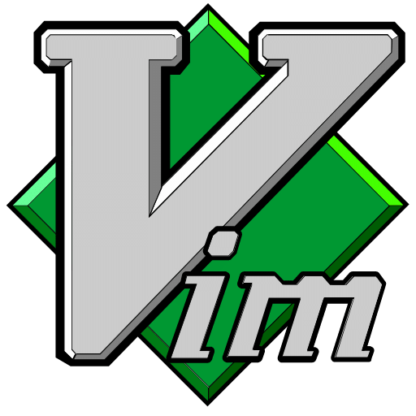

Setting up a vim environment for R data science code development
A vim IDE for R
![]()

1 Introduction
Setting up a vim for use with R can be accomplished in a few steps. This post offers a basic overview of the choices followed by some specific installation steps. I suggest that these are done incrementally.
Vim may be extended by plugins to add features and simplify usage. Several plugins are recommended for simplifying the coding session with R. These include:
- Nvim-R GitHub - jalvesaq/Nvim-R: Vim plugin to work with R which helps to
- UltiSnips for snippets
- Vimtex for Latex with R to generate PDF
I test R frequently from within Nvim-R and less frequently run tests from the command line using test_check("mypackage") .
2 What is the result?
- Work on mostly .R files but some .Rmd
- See a list of objects in the R environment in a window alongside the code file
- Send lines of R code to R running in its own window.
- Save time with prebuilt snippets for common tasks.
- Automatically check the syntax of code as you work
- Run tests on the code as needed
- Build the resulting package if needed
- Fold long code blocks
- Hop around in the document easily
- Output PDF (via latex), run in a web browser, or create other document types
What you will need:
- R installed
- vim or nvim installed (I’ll show nvim)
- an R plugin
- a plugin manager
- a status line manager
- a file explorer
- and a few optional items
Plugin choice Vim-R-Plugin has been replaced by Nvim-R.
3 Setup
I recommend the following steps for Mac or Linux.
- Install R (I recommend using homebrew or the ubuntu standard installation)
- Install Nvim (I prefer Neovim because it has excellent support for LSP (language servers).
- Install a plugin manager (I’ll use vim-plug)
- Create a minimal configuration
- Add plugins
- Test
- Add more plugins as needed
- Add refinements
3.1 Install a plugin manager vim-plug
Install vim-plug. From the home directory, run:
curl -fLo ~/.vim/autoload/plug.vim --create-dirs \
https://raw.githubusercontent.com/junegunn/vim-plug/master/plug.vim3.2 Set up a plugin
Add to ~/.vim/vimrc or init.vim or init.lua
Plug 'neoclide/coc.nvim', {'branch': 'release'}Then run
:PlugInstall3.3 Setup language server
:CocInstall coc-r-lsp3.4 Suggested vim/.config/nvim/init.vim
Suggested configuration to get started. I’ll explain after.
call plug#begin("~/.vim/plugged")
" Plugin Section
set nocompatible
Plug 'morhetz/gruvbox'
Plug 'vim-airline/vim-airline'
Plug 'vim-airline/vim-airline-themes'
Plug 'jalvesaq/Nvim-R', {'branch': 'stable'}
Plug 'ncm2/ncm2'
Plug 'roxma/nvim-yarp'
Plug 'gaalcaras/ncm-R'
Plug 'preservim/nerdtree'
Plug 'tpope/vim-commentary'
Plug 'tpope/vim-fugitive'
Plug 'junegunn/fzf'
Plug 'junegunn/fzf.vim'
Plug 'neoclide/coc.nvim', {'branch': 'release'} " Language Server Protocol (LSP) support
Plug 'SirVer/ultisnips'
Plug 'quangnguyen30192/cmp-nvim-ultisnips'
Plug 'honza/vim-snippets'
Plug 'lervag/vimtex'
Plug 'tmhedberg/SimpylFold'
Plug 'tpope/vim-surround'
Plug 'jalvesaq/vimcmdline'
" End Plugin Section
call plug#end()
" Basic settings
colorscheme gruvbox
set background=dark
syntax enable
filetype plugin indent on
set tabstop=4
set shiftwidth=4
set expandtab
set number
set relativenumber
set textwidth=80
set splitright
set nobackup
set nowritebackup
set updatetime=300
set signcolumn=yes
" R settings (specific to Nvim-R)
" These are some examples of settings for Nvim-R
let R_app = "radian" " Use radian if you have it installed (pip install radian)
let R_cmd = "R"
let R_hl_term = 0
let R_rconsole_width = 80
let R_min_editor_width = 80
let g:R_auto_start = 2
let R_assign = 2 " Use _ for assignment
let R_silent_term = 1
let R_close_term = 1
" LSP settings (Coc.nvim)
" Autocomplete settings
inoremap <expr> <Tab> pumvisible() ? "\<C-n>" : "\<Tab>"
inoremap <expr> <S-Tab> pumvisible() ? "\<C-p>" : "\<S-Tab>"
inoremap <silent><expr> <CR> pumvisible() ? coc#_select_confirm() : "\<C-g>u\<CR>"
" UltiSnips settings
let g:UltiSnipsExpandTrigger="<c-j>"
let g:UltiSnipsJumpForwardTrigger="<c-j>"
let g:UltiSnipsJumpBackwardTrigger="<c-k>"
" Custom keymappings
nmap <C-n> :NERDTreeToggle<CR>
nnoremap <leader>f :Files<CR>
nnoremap <leader>g :Rg<CR>
" Key mappings for sending lines to R
nmap <localleader>ss <Plug>RStart
vmap <localleader>ss <Plug>RStart
nmap <localleader>r <Plug>RSendLine
vmap <localleader>r <Plug>RSendSelection
nmap <localleader>l <Plug>RSendLine
nmap <localleader>p <Plug>RSendParagraphVerify that the plugins were installed by starting nvim and typing :checkhealth. You should have most of these items working. If not, either disable the troublesome plugin by commenting it out with a ” character at beginning of the line or looking up the solution.
Most problems here are solvable with a few web searches.
4 Troubleshooting plugin issues
Here are some issues that I have found:
- Language server (COC.nvim) requires nodejs to be installed
- Nvim-R calls out to R, but can’t find it - make sure R is in your PATH
- Some plugins have incompatible keybindings - remapping can solve this
4.1 Solution to nodejs issue
# On Mac
brew install node
# On Ubuntu
curl -fsSL https://deb.nodesource.com/setup_lts.x | sudo -E bash -
sudo apt-get install -y nodejs5 Advanced enhancements
5.1 UltiSnips - adding custom snippets
UltiSnips is a powerful snippet engine. You can create custom snippets for R in a file like ~/.config/nvim/UltiSnips/r.snippets.
Here’s an example of some useful R snippets:
snippet df "Create data frame"
data.frame(
${1:col1} = ${2:value1},
${3:col2} = ${4:value2}
)
endsnippet
snippet fun "Function definition"
${1:function_name} <- function(${2:arguments}) {
${3:body}
}
endsnippet
snippet for "For loop"
for (${1:i} in ${2:sequence}) {
${3:body}
}
endsnippet5.2 Vim-Fugitive for Git integration
If you’re using Git for version control, vim-fugitive is an excellent plugin that gives you Git capabilities right from Vim:
" Add to your plugin section
Plug 'tpope/vim-fugitive'
" Common commands:
" :Git - equivalent to git status
" :Git commit - commit changes
" :Git push - push to remote
" :Git pull - pull from remote
" :Git blame - see who wrote what5.3 Learning Path
Learning Vim + R can be overwhelming at first. Here’s a suggested pathway:
- Start with basic Vim movements (hjkl, w, b, etc.)
- Learn how to send code to R using Nvim-R (
r) - Gradually add more plugins and learn their features
- Customize your configuration as you identify pain points
Remember that the goal is to make your workflow more efficient. Don’t try to learn everything at once - add features gradually as you get comfortable.
6 Using with devtools package
When developing R packages, the devtools package is incredibly useful. You can integrate it with Nvim-R:
# In your R session
library(devtools)
# Create a new package
create_package("~/path/to/mypackage")
# Test your package
test()
# Document your package
document()
# Install your package
install()7 One more thing…
I’ll update this guide with more tips and tricks in the future. Happy coding! ## Prerequisites
In development
7.1 Step-by-Step Implementation
In development
7.2 Key Takeaways
In development
7.3 Further Reading
In development
Reuse
Citation
@online{(ryy)_glenn_thomas2025,
author = {(Ryy) Glenn Thomas, Ronald},
title = {Setting up a Vim Environment for {R} Data Science Code
Development},
date = {2025-05-13},
url = {https://focusonr.org/posts/configure_vim_for_r/},
langid = {en}
}